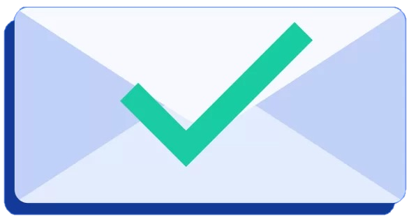

Home
Chi Siamo
Iniziative
FAQ
Login
Richiesta Ricevuta!

Grazie della tua richiesta!
Faremo il possibile per farti avere una risposta il prima possibile!
Ricorda di seguirci anche sui social per non perdere nessuna delle novità dell'ateneo!
Ricorda di seguirci anche sui social per non perdere nessuna delle novità dell'ateneo!